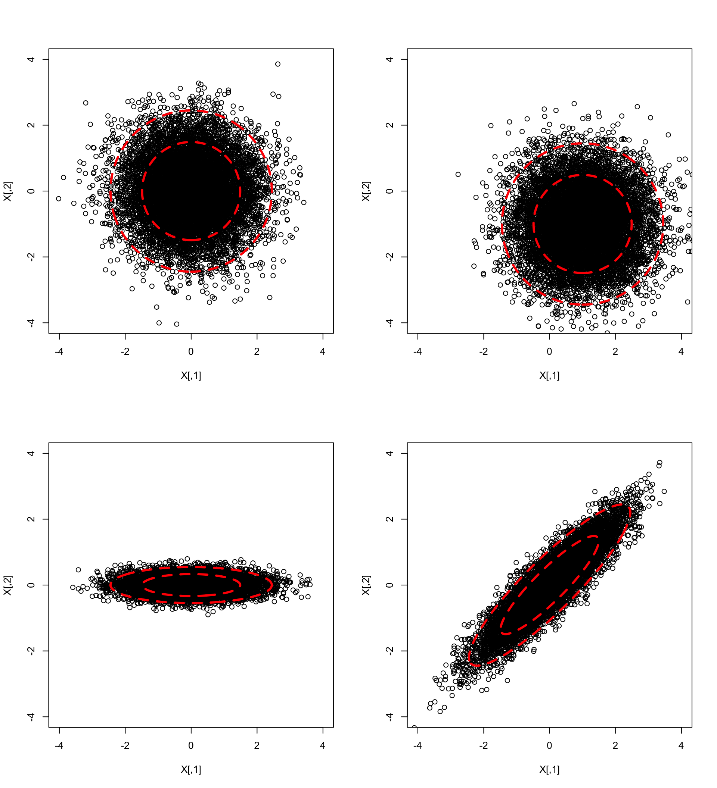
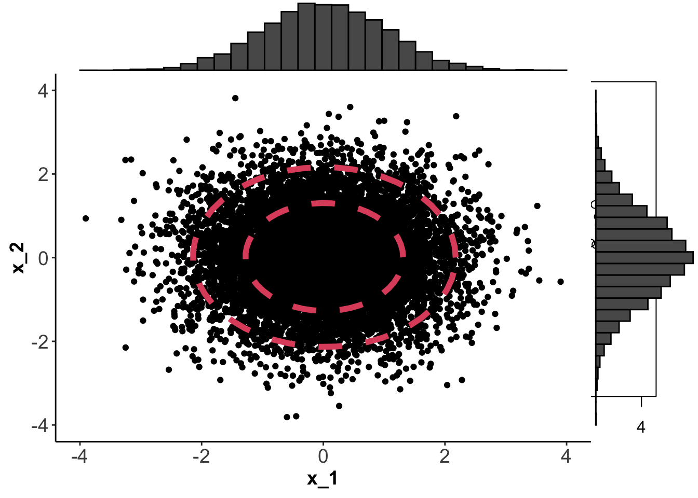

7.1 Definition and Properties of the MVN
Notation: If \(\boldsymbol x\) (\(p \times 1\)) is MVN with mean \(\boldsymbol \mu\) and covariance matrix \(\boldsymbol \Sigma\) then we write \[ \boldsymbol x\sim N_p (\boldsymbol \mu, \boldsymbol \Sigma).\]
If \(p=1\), so that \(\boldsymbol x= x\), \(\boldsymbol \mu= \mu\) and \(\boldsymbol \Sigma= \sigma^2\), say, then the pdf simplifies to \[\begin{eqnarray*} f(\boldsymbol x) &=& \frac{1}{|2 \pi \sigma^2|^{1/2}} \exp \left(-\frac{1}{2}(x - \mu) (\sigma^2)^{-1} (x - \mu) \right)\\ &=& \frac{1}{(2 \pi \sigma^2)^{1/2}} \exp \left(-\frac{1}{2 \sigma^2}(x - \mu)^2 \right) \end{eqnarray*}\] which is the familiar pdf of the univariate normal distribution \(N(\mu,\sigma^2)\).
If \(p>1\) and \(\boldsymbol \Sigma= \operatorname{diag}(\sigma_1^2, \ldots, \sigma_p^2)\) then \[\begin{eqnarray*} f(\boldsymbol x) &=& \frac{1}{(2 \pi)^{p/2}} \exp \left(-\frac{1}{2}(\boldsymbol x- \boldsymbol \mu)^\top \boldsymbol \Sigma^{-1}(\boldsymbol x- \boldsymbol \mu) \right)\\ &=& \frac{1}{(2 \pi)^{p/2}} \exp \left(-\frac{1}{2} \sum_{i=1}^p \frac{(x_i - \mu_i)^2}{\sigma_i^2} \right)\\ &=& \left(\frac{1}{\sqrt{2 \pi}} \exp \left(-\frac{1}{2\sigma_1^2} (x_1 - \mu_1)^2 \right)\right)\\ && \qquad \qquad \times \ldots \left(\frac{1}{\sqrt{2 \pi}} \exp \left(-\frac{1}{2\sigma_p^2} (x_p - \mu_p)^2 \right)\right) \end{eqnarray*}\] Thus, by the factorisation theorem for probability densities, the components of \(\boldsymbol x\) have independent univariate normal distributions: \(x_i \sim N(\mu_i, \sigma_i^2)\).
If \(p=2\) we can plot \(f(\boldsymbol x)\) using contour plots. Below, I’ve generated 1000 points from four different normal distributions using mean vectors \[\boldsymbol \mu_1=\boldsymbol \mu_3=\boldsymbol \mu_4=\begin{pmatrix}0 \\0 \\\end{pmatrix}, \quad \boldsymbol \mu_2=\begin{pmatrix}1 \\-1 \\\end{pmatrix}\] and covariance matrices \[\boldsymbol \Sigma_1=\boldsymbol \Sigma_2=\begin{pmatrix}1&0 \\0&1 \\\end{pmatrix}, \quad \boldsymbol \Sigma_3=\begin{pmatrix}1&0 \\0&0.05 \\\end{pmatrix}, \quad \boldsymbol \Sigma_4=\begin{pmatrix}1&0.9 \\0.9&1 \\\end{pmatrix}.\]

The contours on each plot are obtained by finding values of \(\boldsymbol x\) for which \(f(\boldsymbol x)=c\). The constant \(c\) is chosen so that the the shapes enclose 66% and 95% of the data.
Ellipses
What is the shape of the contours in the plots above? They are defined by \(f(\boldsymbol x)=c\), which implies
\[\begin{equation} (\boldsymbol x- \boldsymbol \mu)^\top \boldsymbol \Sigma^{-1} (\boldsymbol x- \boldsymbol \mu)=c' \tag{7.1} \end{equation}\] for some constant \(c'\). This is the equation of an ellipse. To see this, note that a standard ellipse in \(\mathbb{R}^2\) is given by the equation \[\begin{equation} \frac{x^2}{a^2}+\frac{y^2}{b^2}=1 \quad (a>b>0). \tag{7.2} \end{equation}\] and recall that a standard ellipse has axes of symmetry given by the \(x\)-axis and \(y\)-axis (if \(a>b\), the \(x\)-axis is the major axis, and the \(y\)-axis the minor axis). For example, \(a=10, b=3\) gives the ellipse:

If we define \({\mathbf A}=\left( \begin{array}{cc} a^2&0\\ 0&b^2 \end{array} \right)\) and write \({\mathbf x}=\binom{x}{y}\), then Equation (7.2) can be written in the form \[ \boldsymbol x^\top {\mathbf A}^{-1}\boldsymbol x=c'. \] To shift the centre of the ellipse from the origin to the point \(\boldsymbol \mu\) we modify the equation to be \[ (\boldsymbol x-\boldsymbol \mu)^\top {\mathbf A}^{-1}(\boldsymbol x-\boldsymbol \mu) =c'.\]
What if instead of using a diagonal matrix \(\boldsymbol A\), we use a non-diagonal matrix \(\boldsymbol \Sigma\) as in Equation (7.1)? If \(\boldsymbol \Sigma\) has spectral decomposition \(\boldsymbol \Sigma= \boldsymbol V\boldsymbol \Lambda\boldsymbol V^\top\), then \[ (\boldsymbol x-\boldsymbol \mu)^\top {\boldsymbol \Sigma}^{-1}(\boldsymbol x-\boldsymbol \mu) = (\boldsymbol x-\boldsymbol \mu)^\top \boldsymbol V\boldsymbol \Lambda^{-1}\boldsymbol V^\top(\boldsymbol x-\boldsymbol \mu) = \boldsymbol y^\top \boldsymbol \Lambda^{-1}\boldsymbol y\] where \(\boldsymbol \Lambda\) is a diagonal matrix of eigenvalues, and \(\boldsymbol y= \boldsymbol V^\top (\boldsymbol x-\boldsymbol u)\). Because \(\boldsymbol V\) is an orthogonal matrix (a rotation), we can see that this is the equation of a standard ellipse when using the eigenvectors as the coordinate system. Or in other words, it is an ellipse with major axis given by the first eigenvector, and minor axis given by the second eigenvector, centered aroubd \(\boldsymbol \mu\).
Analogous results for ellipsoids and quadratic forms hold in three and higher dimensions.
7.1.1 Transformations
This implies that a linear transformation of a MVN random variable is also MVN. We can use this result to prove two important corollaries. The first corollary is useful for simulating data from a general MVN distribution.
The second corollary says that any MVN random variable can be transformed into standard form.
\[\boldsymbol y= \boldsymbol \Sigma^{-1/2}(\boldsymbol x- \boldsymbol \mu) \sim N_p(\boldsymbol 0,\mathbf I_p).\]
7.1.2 Moment Generating Functions
Definition 7.3 The moment generating function of a random vector \(\boldsymbol x\in \mathbb{R}^p\) is given by \[ M({\boldsymbol t})={\mathbb{E}}[e^{{\boldsymbol t}^\top \boldsymbol x}], \] and is defined for all \({\boldsymbol t}\in \mathbb{R}^p\) for which \(M({\boldsymbol t})\) is finite.
Proof. For fixed \({\boldsymbol t}\), define the random variable \(Y=\boldsymbol x^\top {\boldsymbol t}\). From Proposition 7.2, \(Y \sim N(\mu_{{\boldsymbol t}}, {\sigma_{\boldsymbol t}}^2)\), where \(\mu_{\boldsymbol t}=\boldsymbol \mu^\top {\boldsymbol t}\) and \(\sigma^2_{\boldsymbol t}={\boldsymbol t}^\top \boldsymbol \Sigma{\boldsymbol t}\).
If \(\sigma_{\boldsymbol t}=0\) then \(Y=\boldsymbol \mu^\top {\boldsymbol t}\) with probability one, and \(M({\boldsymbol t})=e^{\boldsymbol \mu^\top {\boldsymbol t}}\) which agrees with (7.3).
Assume \(\sigma_{{\boldsymbol t}}>0\). Then \[\begin{align*} M({\boldsymbol t})&={\mathbb{E}}[e^{\boldsymbol x^\top {\boldsymbol t}}]\\ &={\mathbb{E}}[e^{Y}]=\int_{-\infty}^\infty \exp(y) \frac{1}{\sqrt{2\pi \sigma_{\boldsymbol t}^2}} \exp\left (-\frac{1}{2}\frac{(y-\mu_{\boldsymbol t})^2}{\sigma_{\boldsymbol t}^2} \right )dy. \end{align*}\]
The integral above can be evaluated by completing the square in the exponent, using the identity \[ y-\frac{1}{2}\frac{(y-\mu_{\boldsymbol t})^2}{\sigma_{\boldsymbol t}^2}=\mu_{\boldsymbol t} +\frac{1}{2}\sigma_{\boldsymbol t}^2-\frac{1}{2}\frac{(y-\mu_{\boldsymbol t}-\sigma_{\boldsymbol t}^2)^2}{\sigma_{\boldsymbol t}^2}. \]
Consequently \[\begin{align*} M({\boldsymbol t})&=\int_{-\infty}^\infty \exp \left\{\mu_{\boldsymbol t}+\frac{1}{2}\sigma_{\boldsymbol t}^2 \right\} \frac{1}{\sqrt{2 \pi \sigma_{\boldsymbol t}^2}}\exp \left\{ -\frac{1}{2} \frac{(y-\mu_{\boldsymbol t}-\sigma_{\boldsymbol t}^2)^2} {\sigma_{\boldsymbol t}^2}\right\}dy\\ &=\exp\left( \mu_{\boldsymbol t}+ \frac{1}{2}\sigma_{\boldsymbol t}^2 \right)\\ &=\exp\left( \boldsymbol \mu^\top {\boldsymbol t}+ \frac{1}{2}{\boldsymbol t}^\top \boldsymbol \Sigma{\boldsymbol t}\right), \end{align*}\] as required.Proof. We prove this result using the factorisation theorem for moment generating functions (MGFs), which is now stated. Let \[{\boldsymbol t}=\begin{pmatrix}{\boldsymbol t}_1\\ {\boldsymbol t}_2\end{pmatrix}\] where \({\boldsymbol t}_1 \in \mathbb{R}^p\), \({\boldsymbol t}_2 \in \mathbb{R}^q\) and \({\boldsymbol t}\in \mathbb{R}^{p+q}\). The joint MGF of two arbitrary random vectors \(\stackrel{p \times 1}{\boldsymbol x}\) and \(\stackrel{q \times 1}{\boldsymbol y}\) is \[ M({\boldsymbol t}_1, {\boldsymbol t}_2)={\mathbb{E}}[e^{{\boldsymbol t}_1^\top \boldsymbol x+ {\boldsymbol t}_2^\top \boldsymbol y}]. \] The factorisation theorem for MGFs states that \(\boldsymbol x\) and \(\boldsymbol y\) are independent if and only if \(M({\boldsymbol t}_1 , {\boldsymbol t}_2)\) factorises, i.e., \[ M({\boldsymbol t}_1 , {\boldsymbol t}_2)=M_1({\boldsymbol t}_1)M_2({\boldsymbol t}_2) \] for some functions \(M_1\) and \(M_2\), in which case \(M_1\) and \(M_2\) are the marginal MGFs of \(\boldsymbol x\) and \(\boldsymbol y\).
Now suppose \(\boldsymbol x\) and \(\boldsymbol y\) are multivariate normal random variables with \[\begin{equation} {\mathbb{E}}[\boldsymbol x]=\boldsymbol \mu_{\boldsymbol x}, \qquad \qquad {\mathbb{E}}[\boldsymbol y]=\boldsymbol \mu_{\boldsymbol y}, \quad {\mathbb{V}\operatorname{ar}}(\boldsymbol x)=\boldsymbol \Sigma_{\boldsymbol x\boldsymbol x}, \quad {\mathbb{V}\operatorname{ar}}(\boldsymbol y)=\boldsymbol \Sigma_{\boldsymbol y\boldsymbol y}, \tag{7.4} \end{equation}\] and \[\begin{equation} {\mathbb{C}\operatorname{ov}}(\boldsymbol x,\boldsymbol y)=\boldsymbol \Sigma_{\boldsymbol x\boldsymbol y}=\boldsymbol \Sigma_{\boldsymbol y\boldsymbol x}^\top = {\mathbb{C}\operatorname{ov}}(\boldsymbol y, \boldsymbol x)^\top. \tag{7.5} \end{equation}\] Using Proposition 7.3 and definitions (7.4) and (7.5), \[\begin{align*} M({\boldsymbol t}_1, {\boldsymbol t}_2)&=\exp\left ( \boldsymbol \mu^\top {\boldsymbol t}+ \frac{1}{2}{\boldsymbol t}^\top \boldsymbol \Sigma{\boldsymbol t}\right )\\ &=\exp\bigg (\boldsymbol \mu_{\boldsymbol x}^\top {\boldsymbol t}_1 +\boldsymbol \mu_{\boldsymbol y}^\top {\boldsymbol t}_2+\frac{1}{2}{\boldsymbol t}_1^\top \boldsymbol \Sigma_{\boldsymbol x\boldsymbol x}{{\boldsymbol t}_1}\\ & \qquad \qquad +\frac{1}{2}{\boldsymbol t}_2^\top \boldsymbol \Sigma_{\boldsymbol y\boldsymbol y}{\boldsymbol t}_2+\frac{1}{2} 2{\boldsymbol t}_1^\top \boldsymbol \Sigma_{\boldsymbol x\boldsymbol y}{\boldsymbol t}_2 \bigg)\\ &=M_1({\boldsymbol t}_1)M_2({\boldsymbol t}_2)M_3({\boldsymbol t}_1, {\boldsymbol t}_2), \end{align*}\] where \(M_1({\boldsymbol t}_1)\) and \(M_2({\boldsymbol t}_2)\) are the marginal MGFs of \(\boldsymbol x\) and \(\boldsymbol y\) respectively, and \[ M_3({\boldsymbol t}_1, {\boldsymbol t}_2)=\exp\left ({\boldsymbol t}_1^\top \boldsymbol \Sigma_{\boldsymbol x\boldsymbol y}{\boldsymbol t}_2 \right ). \] Thus, by the factorisation theorem, \(\boldsymbol x\) and \(\boldsymbol y\) are independent if and only if \(M_3({\boldsymbol t}_1, {\boldsymbol t}_2)\) is constant with respect to \({\boldsymbol t}_1\) and \({\boldsymbol t}_2\), which is the case if and only if \(\boldsymbol \Sigma_{\boldsymbol x\boldsymbol y}={\mathbf 0}_{p,q}\).Proposition 7.4 means that zero correlation implies independence for the MVN distribution. This is not true in general for other distributions.
Note: Propositions 7.1 - 7.4 holds regardless irregardless of whether the covariance matrix \(\boldsymbol \Sigma\) is invertible.
The term \((\boldsymbol x-\boldsymbol \mu)^\top \boldsymbol \Sigma^{-1} (\boldsymbol x-\boldsymbol \mu)\) appears in the exponent of the pdf and will be important later. We now derive its distribution:
We saw earlier in this section chapter that the MVN distribution in \(p\) dimensions has constant density on ellipses or ellipsoids given by \(f(\boldsymbol x) = c\) for some constant \(c > 0\), and that we can rearrange this equation to be of the form \[U(\boldsymbol x) = (\boldsymbol x-\boldsymbol \mu)^\top \boldsymbol \Sigma^{-1} (\boldsymbol x-\boldsymbol \mu) = k\] where \(k = - 2 \log(c) - \log |2 \pi \boldsymbol \Sigma| > 0\) is a combination of the constant, \(c\), and the normalising constant in the pdf. Proposition 7.5 means we can calculate the probability, \(P(U(\boldsymbol x)<k)\), which is the probability of \(\boldsymbol x\) lying within a particular ellipsoid.
7.1.3 Sampling results for the MVN
In this section we present two important results which are natural generalisations of what happens in the univariate case.
Recall from above that if \(\boldsymbol x_1, \ldots, \boldsymbol x_n\) is a random sample from \(N_p(\boldsymbol \mu, \boldsymbol \Sigma)\) then \[\bar{\boldsymbol x} \sim N_p (\boldsymbol \mu, \frac{1}{n}\boldsymbol \Sigma).\] This result is also approximately true for large samples from non-normal distributions, as is now stated in the multivariate central limit theorem.